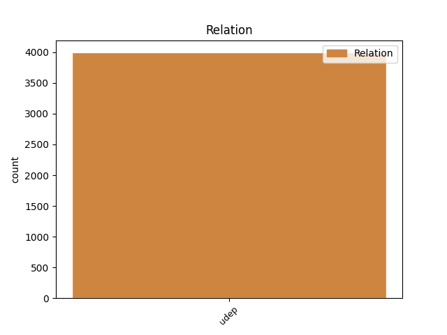
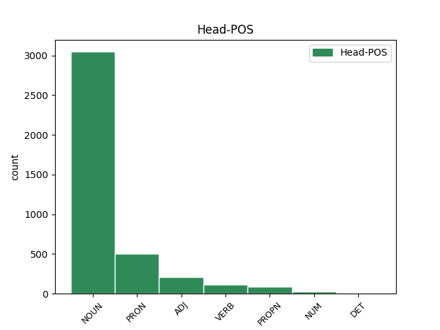
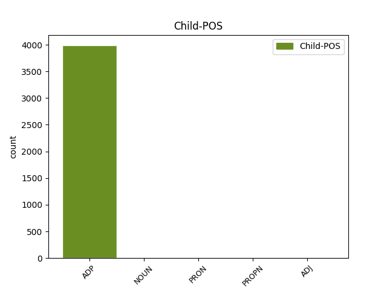

Distribution of features within this leaf



Agreement Rules sorted by frequency.
- When the dependent token is the underspecified dependency(udep) of the head token, and the head token is PRON
1 Rudele _ _ _ _ 0 _ _ _
2 din _ _ _ _ 0 _ _ _
3 jos _ _ _ _ 0 _ _ _
4 și _ _ _ _ 0 _ _ _
5 din _ _ _ _ 0 _ _ _
6 sus _ _ _ _ 0 _ _ _
7 , _ _ _ _ 0 _ _ _
8 sînt _ _ _ _ 0 _ _ _
9 slobode _ _ _ _ 0 _ _ _
10 a _ _ _ _ 0 _ _ _
11 porni _ _ _ _ 0 _ _ _
12 pîră _ _ _ _ 0 _ _ _
13 asupra _ _ _ _ 0 _ _ _
14 dieții _ _ _ _ 0 _ _ _
15 , _ _ _ _ 0 _ _ _
16 pentru _ _ _ _ 0 _ _ _
17 orice _ _ _ _ 0 _ _ _
18 defăimare _ _ _ _ 0 _ _ _
19 va _ _ _ _ 0 _ _ _
20 fi _ _ _ _ 0 _ _ _
21 avînd _ _ _ _ 0 _ _ _
22 , _ _ _ _ 0 _ _ _
23 iară _ _ _ _ 0 _ _ _
24 rudele _ _ _ _ 0 _ _ _
25 de _ _ _ _ 0 _ _ _
26 alături _ _ _ _ 0 _ _ _
27 , _ _ _ _ 0 _ _ _
28 numai _ _ _ _ 0 _ _ _
29 cînd _ _ _ _ 0 _ _ _
30 nu _ _ _ _ 0 _ _ _
31 are _ _ _ _ 0 _ _ _
32 adeverirea _ _ _ _ 0 _ _ _
33 cea _ _ _ _ 0 _ _ _
34 orînduită _ _ _ _ 0 _ _ _
35 de _ _ _ _ 0 _ _ _
36 pravili _ _ _ _ 0 _ _ _
37 , _ _ _ _ 0 _ _ _
38 sau _ _ _ _ 0 _ _ _
39 că _ _ _ _ 0 _ _ _
40 cel _ _ _ _ 0 _ _ _
41 ce _ _ _ _ 0 _ _ _
42 au _ _ _ _ 0 _ _ _
43 făcut _ _ _ _ 0 _ _ _
44 diiata _ _ _ _ 0 _ _ _
45 nu _ _ _ _ 0 _ _ _
46 mai _ _ _ _ 0 _ _ _
47 avea _ _ _ _ 0 _ _ _
48 mințile _ _ _ _ 0 _ _ _
49 întregi _ _ _ _ 0 _ _ _
50 cînd _ _ _ _ 0 _ _ _
51 au _ _ _ _ 0 _ _ _
52 făcut _ _ _ _ 0 _ _ _
53 -o _ _ _ _ 0 _ _ _
54 , _ _ _ _ 0 _ _ _
55 sau _ _ _ _ 0 _ _ _
56 că _ _ _ _ 0 _ _ _
57 iaste _ _ _ _ 0 _ _ _
58 mincinoasă _ _ _ _ 0 _ _ _
59 ( _ _ _ _ 0 _ _ _
60 pentru _ _ _ _ 0 _ _ _
61 care _ _ _ _ 0 _ _ _
62 pricini _ _ _ _ 0 _ _ _
63 și _ _ _ _ 0 _ _ _
64 cutia _ _ _ _ 0 _ _ _
65 milelor _ _ _ _ 0 _ _ _
66 cînd _ _ _ _ 0 _ _ _
67 nu _ _ _ _ 0 _ _ _
68 iaste _ _ _ _ 0 _ _ _
69 alt _ _ _ _ 0 _ _ _
70 moștenitoriu _ _ _ _ 0 _ _ _
71 după _ _ _ _ 0 _ _ _
72 pravili _ _ _ _ 0 _ _ _
73 are _ _ _ _ 0 _ _ _
74 voe _ _ _ _ 0 _ _ _
75 să _ _ _ _ 0 _ _ _
76 facă _ _ _ _ 0 _ _ _
77 pîră _ _ _ _ 0 _ _ _
78 asupră asupra ADP Spsg AdpType=Prep|Case=Gen 79 udep _ ref=PART_IV_CAP_3c.42|SpaceAfter=No
79 -i el PRON Pp3mso Case=Gen|Gender=Masc|Number=Sing|Person=3|PronType=Prs 0 _ _ _
80 ) _ _ _ _ 0 _ _ _
81 . _ _ _ _ 0 _ _ _
1 O _ _ _ _ 0 _ _ _
2 carte _ _ _ _ 0 _ _ _
3 de _ _ _ _ 0 _ _ _
4 datorie _ _ _ _ 0 _ _ _
5 , _ _ _ _ 0 _ _ _
6 dată _ _ _ _ 0 _ _ _
7 de _ _ _ _ 0 _ _ _
8 un _ _ _ _ 0 _ _ _
9 tovaroș _ _ _ _ 0 _ _ _
10 ca _ _ _ _ 0 _ _ _
11 din _ _ _ _ 0 _ _ _
12 partea _ _ _ _ 0 _ _ _
13 tovăroșiei _ _ _ _ 0 _ _ _
14 , _ _ _ _ 0 _ _ _
15 sau _ _ _ _ 0 _ _ _
16 iscălită iscăli VERB Vmp--sf-p--r Case=Acc,Nom|Gender=Fem|Number=Sing|Polarity=Pos|VerbForm=Part 0 _ _ _
17 cutare cutare NOUN Ncfsrn Case=Acc,Nom|Definite=Ind|Gender=Fem|Number=Sing 16 udep _ ref=PART_V_CAP_2a.26
18 și _ _ _ _ 0 _ _ _
19 tovăroșia _ _ _ _ 0 _ _ _
20 , _ _ _ _ 0 _ _ _
21 îndatorează _ _ _ _ 0 _ _ _
22 tovăroșia _ _ _ _ 0 _ _ _
23 și _ _ _ _ 0 _ _ _
24 pre _ _ _ _ 0 _ _ _
25 ceilalți _ _ _ _ 0 _ _ _
26 tovaroși _ _ _ _ 0 _ _ _
27 . _ _ _ _ 0 _ _ _
1 Cînd _ _ _ _ 0 _ _ _
2 femeia _ _ _ _ 0 _ _ _
3 întru _ _ _ _ 0 _ _ _
4 început _ _ _ _ 0 _ _ _
5 are _ _ _ _ 0 _ _ _
6 pricini pricină NOUN Ncfprn Case=Acc,Nom|Definite=Ind|Gender=Fem|Number=Plur 0 _ _ _
7 împotrivitoare împotrivitor ADJ Afpfprn Case=Acc,Nom|Definite=Ind|Degree=Pos|Gender=Fem|Number=Plur 6 udep _ ref=PART_III_CAP_16.6.3
8 spre _ _ _ _ 0 _ _ _
9 înpreunare _ _ _ _ 0 _ _ _
10 , _ _ _ _ 0 _ _ _
11 și _ _ _ _ 0 _ _ _
12 nu _ _ _ _ 0 _ _ _
13 să _ _ _ _ 0 _ _ _
14 pot _ _ _ _ 0 _ _ _
15 tămădui _ _ _ _ 0 _ _ _
16 . _ _ _ _ 0 _ _ _
1 Iar _ _ _ _ 0 _ _ _
2 strigă _ _ _ _ 0 _ _ _
3 fratele- _ _ _ _ 0 _ _ _
4 ăl _ _ _ _ 0 _ _ _
5 mic _ _ _ _ 0 _ _ _
6 , _ _ _ _ 0 _ _ _
7 Căci _ _ _ _ 0 _ _ _
8 e _ _ _ _ 0 _ _ _
9 mic _ _ _ _ 0 _ _ _
10 Şi _ _ _ _ 0 _ _ _
11 mai _ _ _ _ 0 _ _ _
12 voinic _ _ _ _ 0 _ _ _
13 , _ _ _ _ 0 _ _ _
14 Tot _ _ _ _ 0 _ _ _
15 slujind _ _ _ _ 0 _ _ _
16 pe _ _ _ _ 0 _ _ _
17 ispravnic _ _ _ _ 0 _ _ _
18 , _ _ _ _ 0 _ _ _
19 Multă _ _ _ _ 0 _ _ _
20 minte _ _ _ _ 0 _ _ _
21 -a _ _ _ _ 0 _ _ _
22 dobîndit _ _ _ _ 0 _ _ _
23 , _ _ _ _ 0 _ _ _
24 Aferim Aferim PROPN Npmsrn Case=Acc,Nom|Definite=Ind|Gender=Masc|Number=Sing 0 _ _ _
25 , _ _ _ _ 0 _ _ _
26 ce _ _ _ _ 0 _ _ _
27 mai _ _ _ _ 0 _ _ _
28 voinic voinic NOUN Ncmsrn Case=Acc,Nom|Definite=Ind|Gender=Masc|Number=Sing 24 udep _ SpaceAfter=No
29 ! _ _ _ _ 0 _ _ _
Disagree Examples:
1 Ca _ _ _ _ 0 _ _ _
2 grăunțul grăunte NOUN Ncmsry Case=Acc,Nom|Definite=Def|Gender=Masc|Number=Sing 0 _ _ _
3 de de ADP Spsa AdpType=Prep|Case=Acc 2 udep _ ref=MARC4.31
4 muștariu _ _ _ _ 0 _ _ _
5 , _ _ _ _ 0 _ _ _
6 carele _ _ _ _ 0 _ _ _
7 cîndu _ _ _ _ 0 _ _ _
8 -l _ _ _ _ 0 _ _ _
9 samănă _ _ _ _ 0 _ _ _
10 în _ _ _ _ 0 _ _ _
11 pămînt _ _ _ _ 0 _ _ _
12 , _ _ _ _ 0 _ _ _
13 mai _ _ _ _ 0 _ _ _
14 mic _ _ _ _ 0 _ _ _
15 iaste _ _ _ _ 0 _ _ _
16 de _ _ _ _ 0 _ _ _
17 toate _ _ _ _ 0 _ _ _
18 semințele _ _ _ _ 0 _ _ _
19 care _ _ _ _ 0 _ _ _
20 -s _ _ _ _ 0 _ _ _
21 în _ _ _ _ 0 _ _ _
22 pămînt _ _ _ _ 0 _ _ _
23 . _ _ _ _ 0 _ _ _
1 Și _ _ _ _ 0 _ _ _
2 deaca _ _ _ _ 0 _ _ _
3 -l _ _ _ _ 0 _ _ _
4 samănă _ _ _ _ 0 _ _ _
5 , _ _ _ _ 0 _ _ _
6 creaște _ _ _ _ 0 _ _ _
7 și _ _ _ _ 0 _ _ _
8 să _ _ _ _ 0 _ _ _
9 face _ _ _ _ 0 _ _ _
10 mai _ _ _ _ 0 _ _ _
11 mare mare ADJ Afpmsrn Case=Acc,Nom|Definite=Ind|Degree=Pos|Gender=Masc|Number=Sing 0 _ _ _
12 de de ADP Spsa AdpType=Prep|Case=Acc 11 udep _ ref=MARC4.32
13 toate _ _ _ _ 0 _ _ _
14 buruianele _ _ _ _ 0 _ _ _
15 și _ _ _ _ 0 _ _ _
16 face _ _ _ _ 0 _ _ _
17 stîlpări _ _ _ _ 0 _ _ _
18 mari _ _ _ _ 0 _ _ _
19 , _ _ _ _ 0 _ _ _
20 cît _ _ _ _ 0 _ _ _
21 pot _ _ _ _ 0 _ _ _
22 , _ _ _ _ 0 _ _ _
23 supt _ _ _ _ 0 _ _ _
24 umbra _ _ _ _ 0 _ _ _
25 lui _ _ _ _ 0 _ _ _
26 , _ _ _ _ 0 _ _ _
27 păsările _ _ _ _ 0 _ _ _
28 ceriului _ _ _ _ 0 _ _ _
29 să _ _ _ _ 0 _ _ _
30 sălășuiască _ _ _ _ 0 _ _ _
31 . _ _ _ _ 0 _ _ _
1 Și _ _ _ _ 0 _ _ _
2 pilde pildă NOUN Ncfprn Case=Acc,Nom|Definite=Ind|Gender=Fem|Number=Plur 0 _ _ _
3 ca ca ADP Spsa AdpType=Prep|Case=Acc 2 udep _ ref=MARC4.33
4 aceastea _ _ _ _ 0 _ _ _
5 multe _ _ _ _ 0 _ _ _
6 grăiia _ _ _ _ 0 _ _ _
7 lor _ _ _ _ 0 _ _ _
8 cu _ _ _ _ 0 _ _ _
9 cuvîntul _ _ _ _ 0 _ _ _
10 , _ _ _ _ 0 _ _ _
11 cum _ _ _ _ 0 _ _ _
12 putea _ _ _ _ 0 _ _ _
13 auzi _ _ _ _ 0 _ _ _
14 . _ _ _ _ 0 _ _ _
1 Atunci _ _ _ _ 0 _ _ _
2 să _ _ _ _ 0 _ _ _
3 scorni _ _ _ _ 0 _ _ _
4 vihor vifor NOUN Ncmsrn Case=Acc,Nom|Definite=Ind|Gender=Masc|Number=Sing 0 _ _ _
5 de de ADP Spsa AdpType=Prep|Case=Acc 4 udep _ ref=MARC4.37
6 vînt _ _ _ _ 0 _ _ _
7 mare _ _ _ _ 0 _ _ _
8 , _ _ _ _ 0 _ _ _
9 iară _ _ _ _ 0 _ _ _
10 undele _ _ _ _ 0 _ _ _
11 întra _ _ _ _ 0 _ _ _
12 în _ _ _ _ 0 _ _ _
13 corabie _ _ _ _ 0 _ _ _
14 , _ _ _ _ 0 _ _ _
15 atîta _ _ _ _ 0 _ _ _
16 cît _ _ _ _ 0 _ _ _
17 mai _ _ _ _ 0 _ _ _
18 să _ _ _ _ 0 _ _ _
19 împlea _ _ _ _ 0 _ _ _
20 corabiia _ _ _ _ 0 _ _ _
21 . _ _ _ _ 0 _ _ _
1 Un _ _ _ _ 0 _ _ _
2 legheon legiune NOUN Ncmsrn Case=Acc,Nom|Definite=Ind|Gender=Masc|Number=Sing 0 _ _ _
3 de de ADP Spsa AdpType=Prep|Case=Acc 2 udep _ ref=MARC5.9.content
4 draci _ _ _ _ 0 _ _ _
5 . _ _ _ _ 0 _ _ _